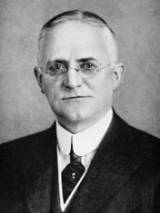
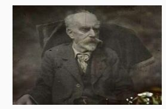

El primer procedimiento fotográfico o heliográfico fue inventado por Niépce hacia 1824. Las imágenes eran obtenidas con betún de Judea, extendido sobre una placa de plata, luego de un tiempo de exposición de varios días.
En julio de 1839, otro francés, Hippolyte Bayard, descubre el medio de obtener imágenes positivas directamente sobre papel. Un papel recubierto de cloruro de plata era oscurecido a la luz y luego expuesto en la cámara oscura después de haber sido impregnado en Ioduro de plata. El tiempo de exposición era de treinta minutos a dos horas.
Siempre en 1839, el anuncio del invento del daguerrotipo incitó al inglés William Henry Fox Talbot a retomar las investigaciones interrumpidas cuyos comienzos remontaban a 1834. En 1841, patentó el calotipo, primer procedimiento negativo/positivo que permitía la multiplicación de una misma imagen gracias a la obtención de un negativo intermediario sobre un papel al cloruro de plata
Le faltaba todavía a la fotografía, la reproducción de los colores. Las primeras tentativas fueron la iniciativa de Edmond Becquerel en 1848, luego la de Niépce de Saint Victor, en 1851, quienes demostraron que una placa de plata recubierta de cloruro de plata puro reproducía directamente los colores, aunque de manera inestable.
En 1869, Louis Ducos du Hauron logra, en Agen, la primera fotografía en colores aplicando el principio demostrado por Maxwell de la descomposición de la luz por intermedio de los tres colores fundamentales, el rojo, el amarillo y el azul. Este realizó tres fotografías de un mismo tema, a través de un filtro respectivamente rojo, azul y amarillo. De estos obtuvo tres positivos del mismo color de cada uno de los filtros utilizados. Superponiendo exactamente las tres imágenes, obtuvo la restitución de los colores.
El físico Gabriel Lippman recibió el Premio Nobel en 1906, por haber descubierto en 1891, el medio de obtener fotografías directamente en colores sobre una misma placa, por medio de un procedimiento interferencial que ya prefiguraba la holografía. Demasiado compleja, esta invención no trascendió el estadio del laboratorio. El primer procedimiento mono placa color que pudo ser utilizado por aficionados nació en 1906. El autocromo inventado por los hermanos Lumière retomaba el principio de la síntesis de tricromía lograda esta vez en un sola placa por medio del añadido de un mosaico de micro filtros de tres colores realizado gracias a granos de fécula de papa.